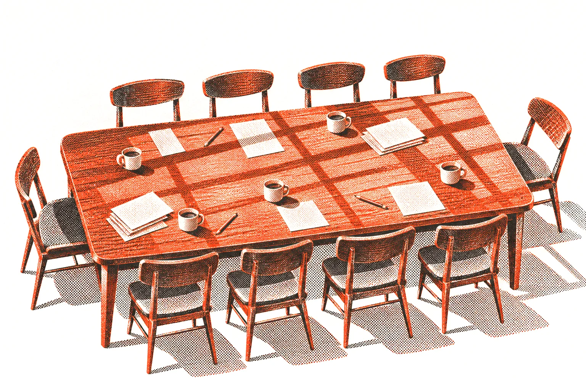
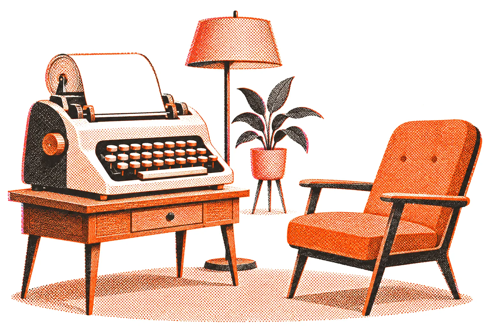
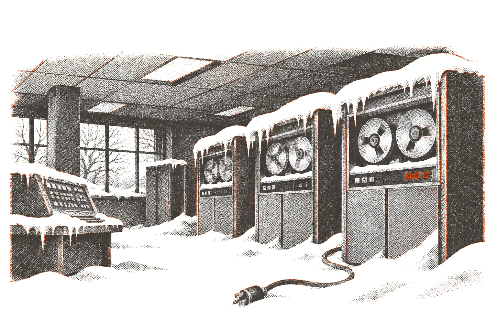
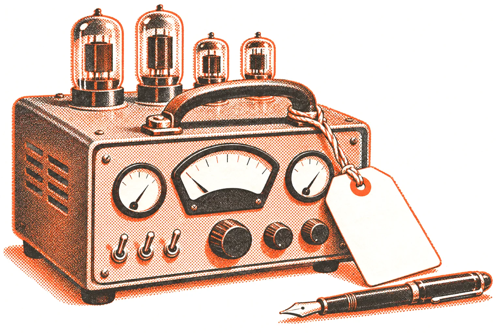
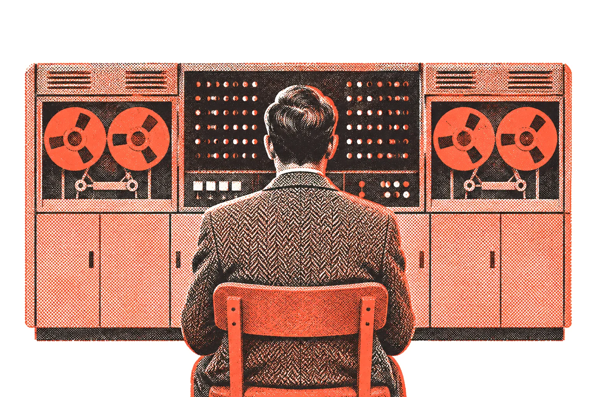

생존을 위한 최소한의 AI 교양 PART 1 기계는 정말 인간처럼 생각할 수 있을까?
기대와 실망의 70년 드라마
AI의 역사도 계절처럼 바뀌었습니다
자연과 다른 점이 하나 있습니다.
황금 같은 봄의 기대가 무르익으면,
어김없이 혹독한 겨울이 찾아왔다는 것.
막대의 높이는 기대의 크기를 나타낸 개념도 · 실제 데이터가 아닙니다
첫 번째 봄 1950~1974 · ‘기계가 인간처럼 생각한다’는 꿈의 시작

미국 뉴햄프셔주 하노버 · 다트머스 대학 · 약 두 달
카드를 누르면 뒤집힙니다 · 참석자 상당수가 이후 각자의 분야에서 전설이 됩니다
1966년 · MIT 조셉 바이젠바움이 만든 대화 프로그램
ELIZA
단순한 패턴 매칭만으로도, 사람들은
심리상담을 받는 듯한 착각에 빠졌습니다.

마법은 없습니다. 문장에서 낱말을 찾아, 정해 둔 대답을 꺼낼 뿐.
엘리자의 방식을 흉내 낸 시연입니다 · 규칙과 문장은 이 덱에서 만든 예시입니다
골드러시처럼 몰려든 자본과 열정 · 그리고 당찬 약속들
막대와 높이는 개념을 보여 주는 그림이며 실제 데이터가 아닙니다.
인용문과 연도는 책 본문을 따랐습니다.
↑ 끌어올리기
‘AI 연구는 어떤 분야에서도
당초 기대했던 성과를
보여주지 못했다.’
첫 번째 겨울 1974~1980 · 과장된 약속이 만들어 낸 혹독한 반동
보고서 하나로 영국의 AI 연구 자금은 대폭 삭감됐고, 미국 국방고등연구계획국(DARPA)도 성과가 미진한 AI 연구소들에 대한 지원을 끊기 시작했습니다.

너무 느린 컴퓨터처리 속도와 메모리가 부족해, 복잡한 논리 추론을 구현하기엔 하드웨어 자체의 한계가 너무 컸습니다.
상식과 문맥기호와 논리 규칙으로는, 인간에게는 자연스러운 상식적 판단이나 문맥 이해를 처리할 수 없었습니다.
언어의 복잡성상황에 따라 달라지는 말의 뉘앙스를 규칙만으로 분석하는 것은 사실상 불가능했습니다.
‘10년 안에 인간 수준의 AI’그 약속은 지켜지지 못했습니다
두 번째 봄 1980~1987 · 전문가 시스템이 불러온 황금기
겨울에서 살아남은 연구자들은 전략을 바꿨습니다.
특정 분야의 전문가를 흉내 내는 AI — 전문가 시스템.
혈액 감염·뇌수막염 같은 심각한 세균 감염을 진단하고, 적절한 항생제를 추천합니다.
성능 테스트의 처방 정확도 —
감염병 전문의보다 높았습니다
1985년쯤, 포춘 500대 기업의 거의 절반이 AI 개발 프로젝트를 진행하고 있었다는 이야기도 있었습니다.
점 하나가 기업 하나 · 개념도법률 전문가 시스템을 직접 운영해 보세요 · 시연
두 번째 겨울 1987~1993 · 전문가 시스템의 몰락과 두 번째 동면
을 이용한
진단 규칙의 자동 생성
↑ 주홍 낱말을 눌러 보세요
두 번의 겨울 동안에도 포기하지 않은 사람
Geoffrey Hinton · ‘딥러닝의 대부’
다른 연구자들이 더 잘 작동하는 방법론으로 눈을 돌릴 때도,
그는 인공 신경망만을 파고들었습니다.
‘인간의 뇌가 신경망으로 작동하는데,
기계도 그렇게 만들면
반드시 성과가 나올 것’
창문은 개념을 보여 주는 그림입니다 · 켜진 창을 눌러 보세요
세 번째 봄 2012~현재 · 딥러닝이 불러온 진짜 혁명
기존의 AI가 사람이 일일이 규칙을 적어 준 요리책이었다면, 딥러닝은 뇌 신경망을 본뜬 수만 개의 가상 신경 세포가 신호를 주고받으며 스스로 정답을 찾아가는 방식입니다.
학습 0회 · 아직 틀리는 점 –
가상 신경 세포 21개짜리 아주 작은 신경망이 화면 안에서 실제로 학습하는 시연입니다. 바탕의 망점은 신경망이 지금 내놓는 답 — 규칙은 한 줄도 적어 주지 않았습니다.
힌튼의 연구팀, 이미지 인식 대회에서 기존 기술 대비 오류율을 거의 절반으로.
알렉스넷 이후 · 구글, 딥마인드, 오픈AI의 연구와 투자
2015ResNet인간의 인식 능력을 넘어서다
1일 1AI · ‘AI 겨울’과 가트너의 기대치 순환 주기(Hype Cycle)
첫 번째 봄
지금 우리는, 이 곡선의
어디쯤에 서 있을까요?
← 곡선 위 손잡이를 끌어 70년을 오가 보세요 →
곡선은 책의 서술을 따라 그린 개념도이며 실제 통계가 아닙니다
인물 탐구 존 매카시 ‘AI’라는 이름을 지어 준 사람

생존을 위한
최소한의
교양
인물 탐구 존 매카시 이름짓기에서 끝나지 않은 공헌

매카시의 공헌은 이름짓기에서 끝나지 않았습니다.
한 계단씩, 평생에 걸쳐.
“인공지능 연구에 필요한 것은
1.7 아인슈타인,
그리고 대형 컴퓨터 자원에
대한 접근이다.”
— 존 매카시 · 지금의 AI 시대를 내다본 듯한 말
3장을 덮으며 — PART 1의 마지막 쪽지